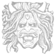
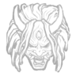

Глава 14:
Cursed Legasy

Персонажи

Юи Кимура
Читать дальше...
Личные навыки:


Они
Читать дальше...



Особая способность:
"Гнев Ямаоки"
Кровавая Ярость
Пока действует кровавая ярость, Они становится крайне опасен и получает доступ к способностям "Рывок демона" и "Удар демона".
Способность: Рывок демона
Удерживаете кнопку активной способности во время действия кровавой ярости, чтобы выполнить рывок демона. Эта способность позволяет Они быстро перемещаться на большое расстояние.
Особая атака: Удар демона
Удерживаете кнопку атаки во время действия кровавой ярости, чтобы нанести удар демона. Удар демона имеет большую дальность действия и при успешном попадании приводить любого выжившего в состояние "при смерти".
Dead By Daylight
Контакты:
Помощь:
предложения отправлят сюда
@mail: dbd-help@mail.ru
D
E
A
D
E
A
D
B
Y
Y
D
A
Y
L
I
G
H
T
A
Y
L
I
G
H
T